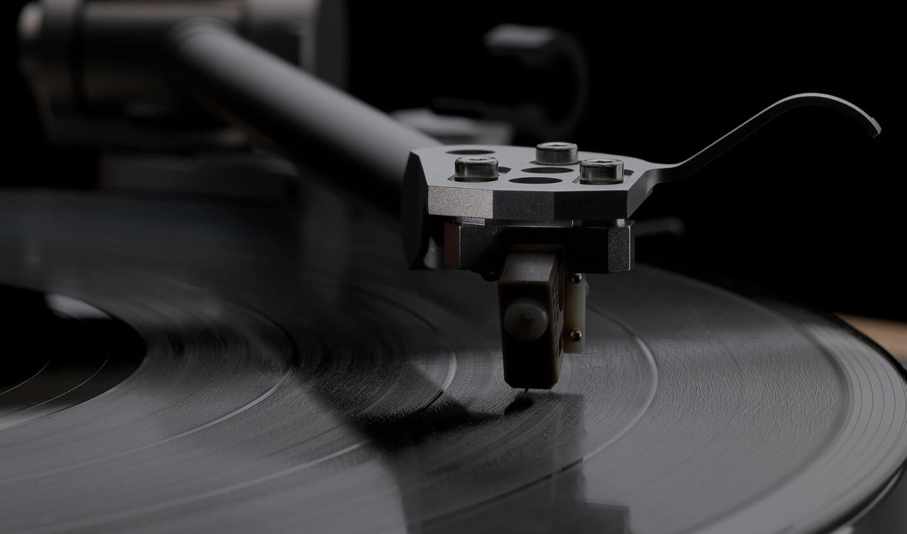
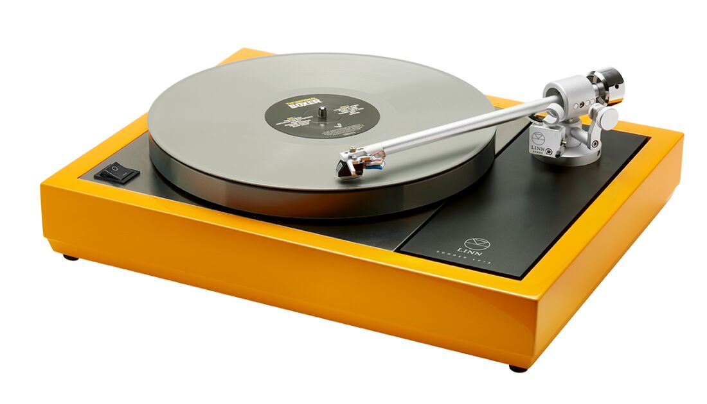
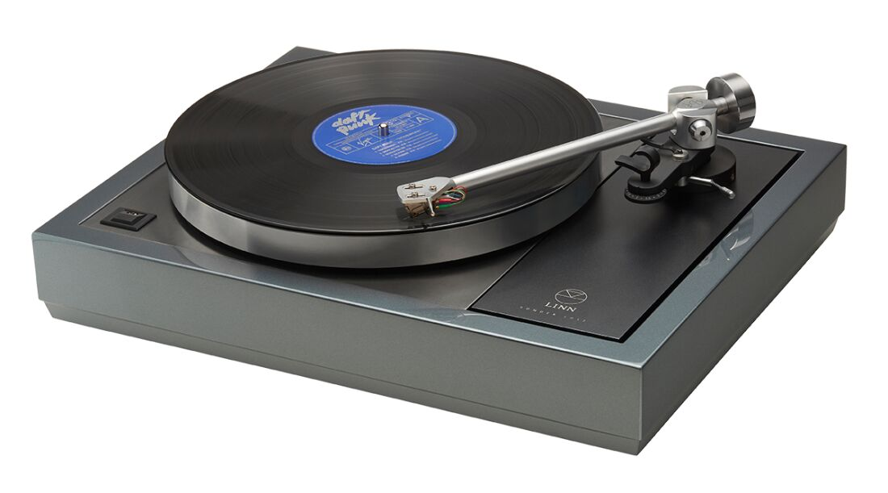
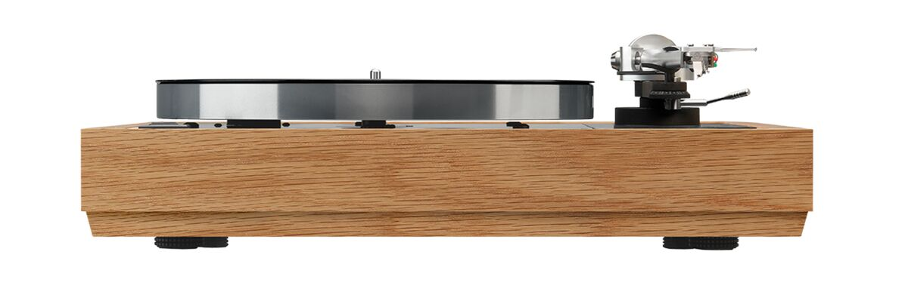
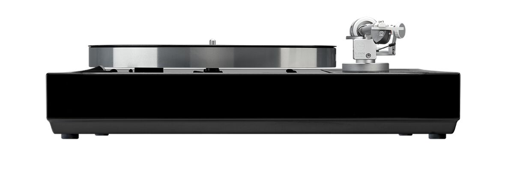

Plattenspieler in der Westbahnstraße
3 Marken, vom ersten Plattenspieler bis zum Linn Klimax LP12.
3 Marken für Plattenspieler
Plattenspieler, die Handwerk, Design und feinen Klang verbinden. Ob Einsteiger oder Liebhaber der Analogtechnik: Bei uns finden Sie das passende Modell, und wir pflegen es auch.


Der Linn LP12 in drei Stufen
Majik, Selekt und Klimax: ein Plattenspieler, der mit Ihnen wächst.

Majik LP12

Selekt LP12

Selekt LP12 in Eiche

Majik LP12 in Schwarz